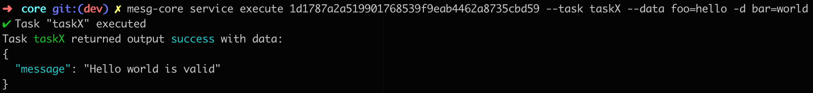

With this update, we are reverting Core’s version back to V0.3.0 in order to fall in line with traditional semantic versioning. Version 1 of MESG Core will not debut until we have ensured that the Core API does not require additional alterations.
The V0.3.0 release will apply to MESG Core and will resolve bugs we’ve discovered in testing, in addition to the debut of new features.
New features in Core V0.3.0:
-
Multiple Cores running on the same computer.
Allowing multiple copies of MESG Core to run on the same computer is the first step in the implementation of the network. It increases flexibility in implementation by allowing the testing of the network without requiring the involvement of multiple computers. -
Configuration of the CLI’s output with --no-color and --no-spinner flags. Colorize JSON
We’ve created a better general user experience while using the CLI. Once servers start, apps can now automatically execute MESG-related functionalities using a CLI.

-
Added required validations on Services’ task, event and output data
We’ve added more validations and tests for the development of Services. Each time you deploy a Service, you will receive feedback from Core, helping improve the development workflow of the Service. -
BREAKING CHANGE. Added support for .dockerignore, and removed support of .mesgignore
Please rename .mesgignore to .dockerignore as a solution to this breaking change. This was done in order to ensure easier adoption and increased compatibility between Docker and MESG.
For a complete list of new, updated and removed features, refer to Github.